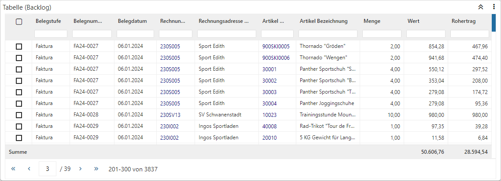
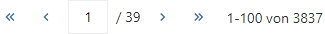
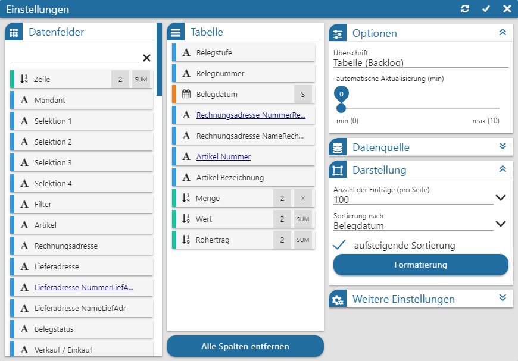
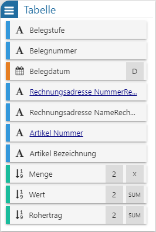
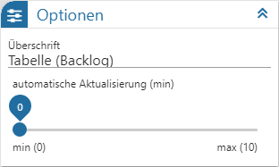
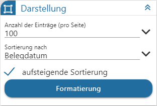
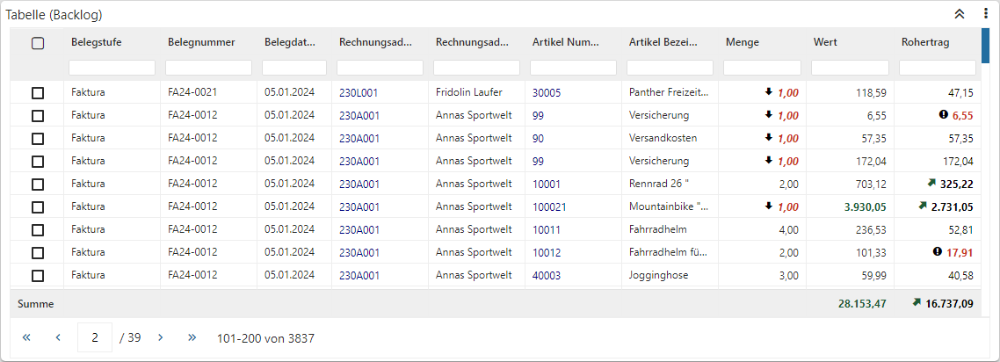
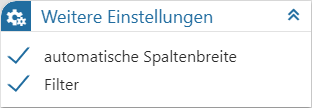

Power Report - Widgets - Tabelle

Das Datenmaterial wird in Form einer Tabelle dargestellt. Innerhalb der Tabelle kann sortiert oder gesucht werden. Folgende Spezialfunktionen stehen in diesem Widget zur Verfügung:
Ø Suchzeile
Mit Hilfe der Option "Filter" kann eine Suchzeile für die Tabelle eingeblendet werden. Es handelt sich hierbei um eine Volltextsuche pro Spalte, welche durch Anwahl der Taste "Enter" oder "Tab" ausgelöst wird und unabhängig vom Quickfilter agiert.
Ø

BlätternDie Tabelle wird immer in Seiten angezeigt, wobei die Anzahl der Datensätze pro Seite über die Einstellungen des Widgets definiert werden (Option "Einträge"). Das Blättern selber findet über VCR-Buttons statt, welcher unterhalb der Tabelle dargestellt werden.
Ø Quickfilter
Zur Nutzung des Quickfilters steht in der ersten Spalte der Tabelle eine Checkbox-Auswahl zur Verfügung. Aktiviert man diese bei bestimmten Zeilen und wählt die Funktion "Tabellen Selektion" aus dem Widget-Menü aus, so wird der Quickfilter ausgelöst. Dieser beinhaltet als Filterkriterium die zuvor gewählten Datensätze.
Hinweis
Pro Power Report-Vorlage können maximal 4 Tabellen eingefügt werden.
Einstellungen

Folgende Eingabefelder, Einstellungen und Informationen stehen zur Verfügung:
Datenfelder

Ø Tabelle "Datenfelder"
In dieser Tabelle werden alle Felder der Datenquelle dargestellt, welche per Drag & Drop in die Tabelle "Tabelle" übergeben werden können. Der Power Report unterscheidet hierbei nach den folgenden Datentypen:
ü  - Alphanumerisch
- Alphanumerisch
Es handelt sich um ein
Feld mit alphanumerischen Inhalt.
ü  - Text
- Text
Es handelt sich um ein Feld mit
Langtext.
ü  - Bild (Grafik)
- Bild (Grafik)
Es handelt sind um ein
Feld mit einem Bild als Inhalt.
ü  - Datum
- Datum
Es handelt sich um ein Feld des
Typs "Datum", wobei das Darstellungsformat selber bestimmt werden darf. Hierfür
muss nur das Symbol  neben der
Beschreibung des Felds angeklickt werden, wodurch sich die folgende Auswahl
öffnet:
neben der
Beschreibung des Felds angeklickt werden, wodurch sich die folgende Auswahl
öffnet:
ü - Zahl (Measure)
Es handelt sich um ein
Feld mit numerischen Inhalt, wobei eine optionale Summe pro Zahl gebildet werden
kann (Summenberechnung erfolgt pro Seite). Die Steuerung der Summenanzeige
erfolgt über die Anwahl des Symbols  bzw. neben der Beschreibung des Felds,
wodurch sich die folgende Auswahl öffnet:
bzw. neben der Beschreibung des Felds,
wodurch sich die folgende Auswahl öffnet:
Hinweis
Durch Anwahl des Symbols kann pro Measure die Anzahl der Nachkommastellen definiert werden, wobei eine kaufmännische Rundung stattfindet. Bei Verwendung des Widget Filter werden solche Datenfelder wiederum ungerundet berücksichtigt!
Hinweis
Mit Hilfe der Suchzeile kann über eine Volltextsuche nach Datenfeldern gesucht werden, wobei das %-Zeichen als Platzhalter verwendet werden kann.
Tabelle

Ø Tabelle "Tabelle"
Die hier abgelegten Felder werden in der Tabelle dargestellt. Handelt es sich nicht um einen Power Report auf Grundlage einer WinLine LIST-Liste, so werden die Standardspalten wie folgt gebildet:
ü Erste 6 Dimensionen
ü Erste Datumsfeld
ü Erstes Measure
Ø alle Spalten entfernen
Durch Anwahl dieses Buttons wird die Tabelle "Tabelle" geleert.
Optionen

Ø Überschrift
An dieser Stelle wird die Bezeichnung der Tabelle definiert.
Ø automatische Aktualisierung (min)
An dieser Stelle kann definiert werden, ob sich der Inhalt der Tabelle automatisch aktualisieren soll. Mit der Einstellung "0" findet keine Aktualisierung statt.
Datenquelle

Ø Datenquelle
Dieses Informationsfeld zeigt den Namen der zu Grunde liegenden Datenquelle an.
Ø Datenherkunft
An dieser Stelle kann mit Hilfe einer Auswahlliste definiert werden, aus welchem Bereich der Datenquelle die Daten des Widgets stammen sollen. Die Auswahl "aktuell" steht immer zur Verfügung und spiegelt die im Ausgangsfenster gewählte Datenquelle (temporäre Datenquelle, Snapshot, View oder MasterView) wieder.
Hinweis
Gibt es für die Datenquelle mehrere Snapshots, so sind diese über den Eintrag "xxx (statisch)" (xxx => Name der Auswertung) zusammengefasst. Innerhalb der Snapshots erfolgt die weitere Selektion über den Widget Filter.
Ø  Widget Filter
Widget Filter
Durch Anwahl dieses Buttons wird das Fenster Widget Filter geöffnet. In diesem kann die genutzte Datenquelle nach frei definierbaren Kriterien eingeschränkt werden.
Hinweis
Handelt es sich nicht um eine importiere Datenquelle, so werden die folgenden Selektionskriterien automatisch vorgegeben, wobei ein Editieren selbstverständlich möglich ist:
ü Mandant
Es wird durch die
Filterzeile "Mandant = aktuell" automatisch auf die Daten des aktuellen Mandaten
eingegrenzt.
ü Selektion 1 bis 4 / Filter
Es
wird automatisch auf die Daten jenes Snapshots eingegrenzt, über welchen der
Power Report ausgegeben wurde. Die Filterzeilen hierzu lauten "Selektion X =
aktuell" bzw. "Filter = aktuell".
Hinweis
Mit Hilfe des Widgets Datenquellen Info ist jederzeit nachvollziehbar, was sich gerade hinter "aktuell" verbirgt (Einstellung "Aktuelle Sel.").
Darstellung

Ø Anzahl der Einträge (pro Seite)
Die Tabelle wird immer in Seiten angezeigt. Wieviel Einträge pro Seite dargestellt werden sollen, kann an dieser Stelle hinterlegt werden.
Hinweis
Handelt es sich um einen Power Report auf Grundlage einer WinLine LIST-Liste, so wird die Anzahl gemäß den definierten Cockpitzeilen vorgeschlagen.
Ø Sortierung nach
An dieser Stelle wird die Sortierung in der Tabelle definiert. Der Eintrag "Standard" steht hierbei für die Sortierung, welche das Ausgangsprogramm der Datenquellen mitgegeben hat.
Ø aufsteigende Sortierung
Mit Hilfe dieser Einstellung kann auf- oder absteigend sortiert werden.
Ø Formatierung
Um direkt auf "wichtige" Measures aufmerksam gemacht zu werden, steht in der Tabelle die Formatierung zur Verfügung. Diese ermöglicht es, Zahlen nach bestimmten Regeln gesondert darzustellen.
Beispiel

Weitere Einstellungen

Ø automatische Spaltenbreite
Durch Aktivierung dieser Option werden die Spaltenbreiten automatisch an die Breite der Tabelle angepasst, wodurch es keine horizontalen Scrollbar geben kann.
Hinweis
Wird mit der automatischen Spaltenbreite gearbeitet, so kann die Breite der Spalten temporär verändert, aber nicht dauerhaft gespeichert werden.
Ø Filter
Durch den Schalter "Filter" kann definiert werden, ob die Filterzeile in der Tabelle zur Verfügung stehen soll.
Buttons

Ø Aktualisierung
Mit Hilfe dieses Buttons werden die Einstellungen gespeichert, direkt angewendet und das Einstellungsfenster bleibt geöffnet.
Ø Ok
Durch Anwahl des Buttons "Ok" werden die Änderungen angewendet und das Fenster geschlossen.
Ø Ende
Durch Anwahl des Buttons "Ende" wird das Einstellungsfenster geschlossen und nicht gespeicherte Änderungen verworfen.